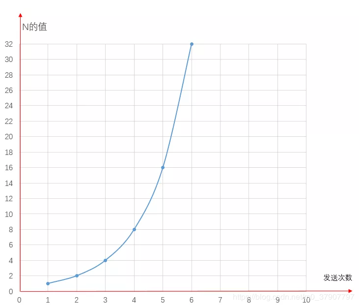
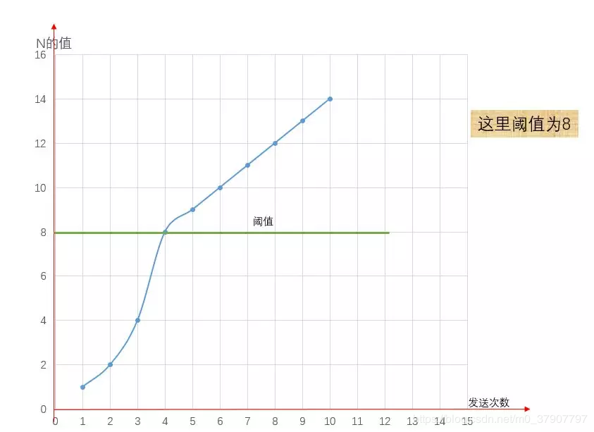
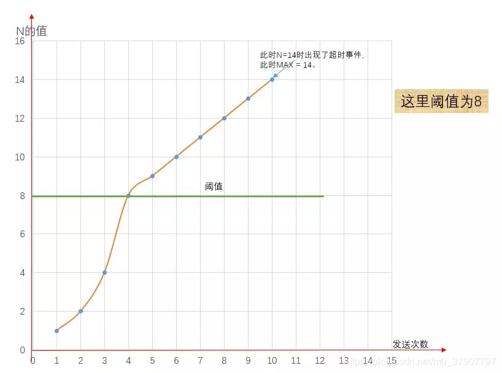
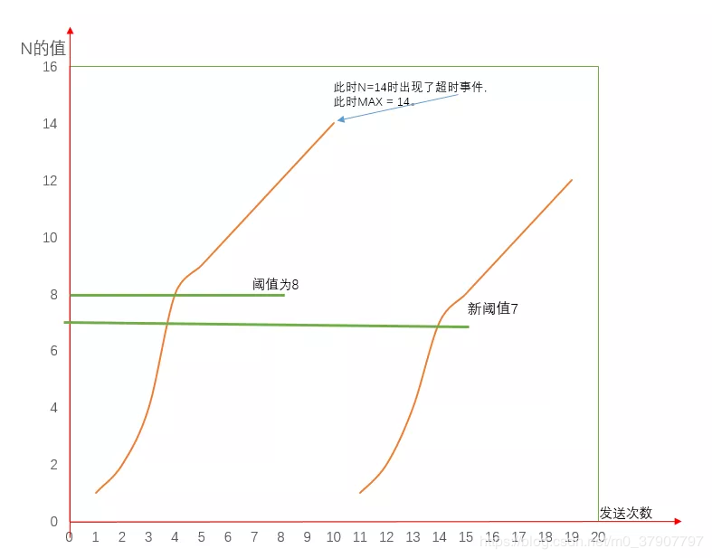
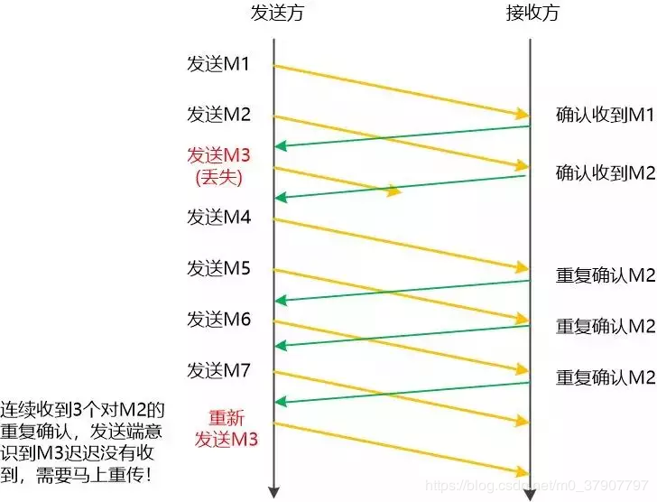
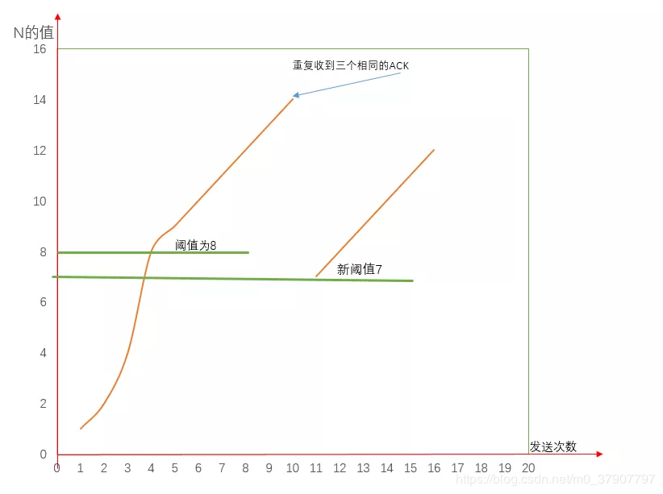

原文连接:https://www.cnblogs.com/kubidemanong/p/12048297.html
大家可能都听说过拥塞控制和流量控制，想必也有一些人可能还分不清拥塞控制和流量控制，进而把他们当作一回事。拥塞控制和流量控制虽然采取的动作很相似，但拥塞控制与网络的拥堵情况相关联，而流量控制与接收方的缓存状态相关联。
也就是说，拥塞控制和流量控制是针对完全不同的问题而采取的措施。今天这篇文章，我们先来讲讲拥塞控制。
一、为何要进行拥塞控制？
为了方便，我们假设主机A给主机B传输数据。
我们知道，两台主机在传输数据包的时候，如果发送方迟迟没有收到接收方反馈的ACK，那么发送方就会认为它发送的数据包丢失了，进而会重新传输这个丢失的数据包。
然而实际情况有可能此时有太多主机正在使用信道资源，导致网络拥塞了，而A发送的数据包被堵在了半路，迟迟没有到达B。这个时候A误认为是发生了丢包情况，会重新传输这个数据包。
结果就是不仅浪费了信道资源，还会使网络更加拥塞。因此，我们需要进行拥塞控制。
二、如何知道网络的拥塞情况？
A 与 B 建立连接之后，就可以向B发送数据了，然而这个时候 A 并不知道此时的网络拥塞情况如何，也就是说，A 不知道一次性连续发送多少个数据包好，我们也把 A 一次性连续发送多少个数据包称之为拥塞窗口，用 N 代表此时拥塞窗口的大小吧。
为了探测网络的拥塞情况，我们可以采取以下两种策略：
1、先发送一个数据包试探下，如果该数据包没有发生超时事件(也就是没有丢包)。那么下次发送时就发送2个，如果还是没有发生超时事件，下次就发送3个，以此类推，即N = 1, 2, 3, 4, 5.....

2、一个一个增加实在是太慢了，所以可以刚开始发送1个，如果没有发生超时时间，就发送2个，如果还是没有发送超时事件就发送4个，接着8个...，用翻倍的速度类推,即 N = 1, 2, 4, 8, 16...

无论是第一种方法还是第二种方法，最后都会出现瓶颈值。不过这里值得注意的是，第一种情况的增长速率确实有点慢，但是第二种情况以指数增长，增长速度有点太快了，可能一下子就到瓶颈值了。
为了解决这个过慢或过快的问题，我们可以把第一种方法和第二种方法结合起来。也就是说，我们刚开始可以以指数的速度增长，增长到某一个值，我们把这个值称之为阈值吧，用变量 ssthresh 代替。当增长到阈值时，我们就不在以指数增长了，而是一个一个线性增长。
所以最终的策略是：前期指数增长，到达阈值之后，就以一个一个线性的速度来增长。

(注：8之后其实是直线的，那里只是弯曲了一下)
我们也把指数增长阶段称之为慢启动，线性增长阶段称之为拥塞避免
三、到了瓶颈值之后怎么办？
无论是指数增长还是一个一个增长，最终肯定会出现超时事件，总不可能无限增长吧。当出现超时事件时，我们就认为此时网络出现了拥塞了，不能再继续增长了。我们就把这个时候的N的值称之为瓶颈值吧，用MAX 这个字母来代替吧，即最大值。

注：这里再次提醒阈值过后是一个一个线性增长，图中之所以弯曲是因为我画图原因导致的
当达到最大值MAX之后，我们该怎么办呢？
当到达最大值之后我们采取的策略是这样的：
我们就回到最初的最初的状态，也就是说从1，2，4，8.....开始,不过这个时候我们还会把ssthresh调小，调为MAX值的一半，即ssthresh = MAX / 2。

图中阈值为8，瓶颈值是14；超时事件发生后，阈值为14 / 2 = 7。
四、超时事件就一定是网络拥塞？
超时事件发送就一定是网络出现了拥堵吗？其实也有可能不是出现了网络拥堵，有可能是因为某个数据包出现了丢失或者损害了，导致了这个数据包超时事件发生了
为了防止这种情况，我们是通过冗余 ACK来处理的。我们都知道，数据包是有序号的，如果A给B发送M1, M2, M3, M4, M5...N个数据包，如果B收到了M1, M2, M4....却始终没有收到M3，这个时候就会重复确认M2，意在告诉A,M3还没收到，可能是丢失

当A连续收到了三个确认M2的ACK，且M3超时事件还没发生。A就知道M3可能丢失了，这个时候A就不必等待M3设置的计时器到期了，而是快速重传M3。并且把ssthresh设置为MAX的一半，即ssthresh = MAX/2，但是这个时候并非把控制窗口N设置为1，而是让N = ssthresh，N在一个一个增长。

我们也把这种情况称之为快速恢复。而这种具有快速恢复的TCP版本称之为TCP Reno。
还有另外一种TCP版本，无论是收到三个相同的ACK还是发生超时事件，都把拥塞窗口的大小设为1，从最初状态开始，这种版本的TCP我们称之为TCP Tahoe。
最后
偷偷透露一下，由于第一次画这种图，这几个图画了差不多两个小时，也是醉了。
有收获？希望老铁们来个三连击，给更多的人看到这篇文章
1、点赞，可以让更多的人看到这篇文章
2、关注原创微信公众号『苦逼的码农』，为了巩固计算机基础知识（计算机网络+ 操作系统+数据库+Linux）以及算法，最近开了个微信公众号『苦逼的码农』，感兴趣的可以关注，重点讲解算法相关文章，嘻嘻。后台回复『电子书』送你一份精选电子书大礼包，包含各类技能的优质电子书